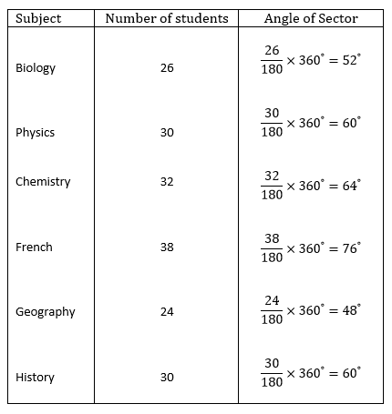
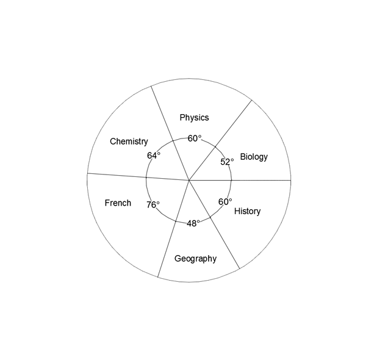
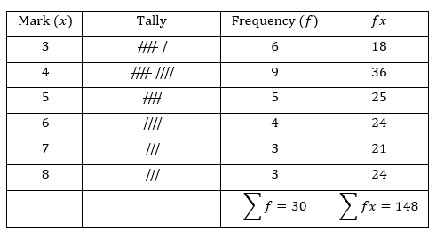
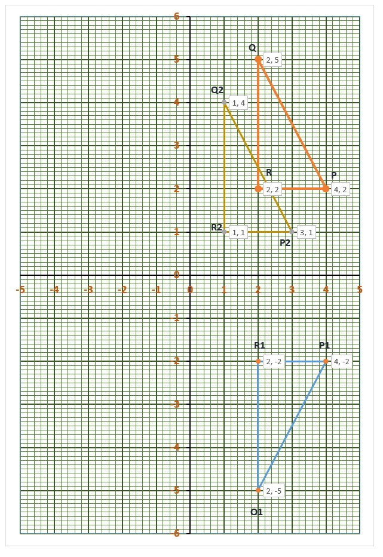

ESSAY TYPE QUESTIONS (2012)
a. Evaluate \(\dfrac{0.035 \times 1.02}{0.00015} \) leaving your answer in standard form.
b. An account of GHc 4,200.00 was shared between Aba and Kwame. If Aba had \(\dfrac{5}{7} \) of the amount,
i. how much did Kwame receive?
ii. what percentage of Aba's share did Kwame receive?
c. Find the value of x in the diagram below.

a. \[ \dfrac{0.035 \times 1.02}{0.00015} \]
\[\dfrac{35 \times {10}^{-3} \times 102 \times {10}^{-2} }{15 \times 10^{-5} } \]
\[\dfrac{7 \times {10}^{-3} \times 34 \times {10}^{-2} }{\times 10^{-5} } \]
\[\dfrac{238 \times {10}^{-5} }{\times 10^{-5} } = 238 = 2.38 \times {10}^2 \]
b.
\(\text{i. Fraction received by Kwame = } 1- \dfrac{5}{7} = \dfrac{2}{7} \\
\text{Amount received by Kwame } = \dfrac{2}{7} \times \text{GHc 4,200} \\
= 2 \times \text{GHc 600} \\
= \text{GHc 1200.00}
\)
\(\text{ii. Amount received by Aba } \\
= \dfrac{5}{7} \times \text{GHc 4,200} \\
= \text{GHc 3000.00} \text{ OR } \\
\text{ Amount received by Aba } \\
= 4200 - 1200 \\
= \text{GHc 3000.00} \\
\)
\( \text{Percentage of Aba's share that Kwame received } \\
= \dfrac{1200}{3000} \times 100 = 40 \% \)
c. \( (4x -30) + (x+ 10) + (2x + 30) = 360 \\
\text{ (Sum of angles at a point is 360}^{\circ}) \\
4x + x + 2x - 30 + 10 + 30 = 360 \\
7x = 350 \\
x = \dfrac{350}{7} = 50^{\circ} \)
a. A car consumes a gallon of petrol for every 30 km drive. The driver of the car set out on a journey of 420 km with 10 gallons of petrol in the fuel tank.
i. How many more gallons of petrol will be needed to complete the journey?
ii. Find the cost of the petrol used for the journey of 420 km if a gallon of petrol cost GHc 5.50.
b. The average number of spectators at a football competition for the first five days was 3,144. The attendance on the sixth day was 3,990. Find the
i. total attendance on the \(\textbf{first five} \) days.
ii. average attendance for the 6 days.
c. The area enclosed by a square garden is \(121 {m}^2 \). What is the distance around the garden?
a. \(i. \text{Amount of petrol needed for journey } \\
=\dfrac{420}{30} = \text{ 14 gallons } \\
\Rightarrow \text{More of petrol needed = 14 - 10 = 4 gallons.} \\
\)
\(ii. \text{Cost of petrol used for journey } = 5.50 \times 14 \\
= \text{ GHc 77.00 } \)
b. \(i. \text{ Total attendance on first five days = } 3144 \times 5 \\
= 15720 \\
\)
\(ii. \text{ Total attendance for the 6 days = 15720 + 3990 } \\
= 19710 \\
\text{ Average attendance for the 6 days } \\
= \dfrac{19710}{6} = 3285 \)
c. \(\text{ Area of square garden = 121 } m^{2} \\ \text{ Length of side of square garden } = \sqrt{121} = \text{ 11 m} \\ \text{ Distance around the garden } \\ = 4 \times 11 = \text{ 44 m } \)
a. The table shows the number of students who scored more than \( 80 \% \) in the listed subject.
 i. Draw a pie chart for the distribution.
i. Draw a pie chart for the distribution.
ii. What is the probability that a student chosen at random from the distribution, offers Chemistry?
b. A woman bought 210 oranges for GHc 7.50. She sold all of them at 3 for 15 Gp. Find the
i. total selling price of the oranges;
ii. percentage profit
\( \text{ a. i. Total number of students = 26 + 30 + 32 + 38 + 24 + 30 = 180 } \)


ii. Probability that a student offers chemistry \( = \dfrac{32}{180} = \dfrac{8}{45} \)
OR Probability that a student offers chemistry = \( \dfrac{64}{360} = \dfrac{8}{45} \)
b. i. Total selling price of the oranges = \( \dfrac{210}{3} \times \text{ 15 Gp } \)
= \( 70 \times \text{ GHc 0.15 } \)
= \(\text{ GHc 10.50 } \)
ii. \( \text{ Profit = GHc 10.50 - GHc 7.50 = GHc 3.00 } \)
\( text{ Percentage profit } = \dfrac{3}{7.5} \times 100 = 40 \% \)
The marks scored by some students in a Mathematics test are as follows:

a. Construct a frequency distribution table for the scores.
b. Using the table, find for the distribution, the
i. mode;
ii. mean, correct to \(\textbf{one} \) decimal place;
iii. median.
a.

b.
\( \text{ i. Mode = 4 } \)
\(\text{ Mean } \bar{x} = \dfrac{\sum fx}{\sum f} = \frac{148}{30} = 4.933 \approx 4.9 \)
\(\text{ Median = } \dfrac{4 + 5}{2} = 4.5 \)
a.
i.
Find the Least Common Multiple (L. C. M) of 9, 18 and 16.
ii. Arrange \(\dfrac{8}{9}, \dfrac{7}{18}, \dfrac{10}{16} \) in ascending order of magnitude.
b. Using a ruler and a pair of compass only
i. construct a triangle with length PQ = 10 cm, angles QPR = \({45}^{\circ} \) and PQR = \( {60}^{\circ}\)
ii. construct the perpendicular bisectors of PR and RQ to meet at T
iii. measure the length of TP
a.
i.
\( 9 = 3 \times 3 \\
18 = 2 \times 3 \times 3 \\
16 = 2 \times 2 \times 2 \times 2 \\
\Rightarrow \text{ L.C.M. = } 2 \times 2 \times 2 \times 2 \times 3 \times 3 = 144 \)
ii.
Express the fraction in equivalent fractions (i.e. let the denominators of the fractions be the same.)
\(\dfrac{8}{9} = \dfrac{8 \times 16}{9 \times 16} = \dfrac{128}{144} \)
\(\dfrac{7}{18} = \dfrac{7 \times 8}{18 \times 8} = \dfrac{56}{144} \)
\(\dfrac{10}{16} = \dfrac{10 \times 9}{16 \times 9} = \dfrac{90}{144} \)
\(\Rightarrow \) In ascending order of magnitude, we have \( \dfrac{7}{18} \text{ , } \dfrac{10}{16} \text{ , } \dfrac{8}{9}
\)
b.
 iii.
iii.
|TP| = 5.2 cm
i. Using a scale of 2 cm to 1 unit on both axes, draw two perpendicular axes 0x and 0y on a graph sheet.
ii. Mark on the same graph sheet, the x-axis from -5 to 5 and y-axis from -6 to 6.
iii. Plot the points P(4,2), Q(2,5) and R(2,2). Join the points P, Q, R to form triangle PQR.
iv. Using the x-axis as a mirror line, draw the image \( {P}_1{Q}_1{R}_1 \) of the triangle PQR such that
\( P\rightarrow {P}_1, Q\rightarrow {Q}_1, R\rightarrow {R}_1 \)
v. Write down the coordinates of \( {P}_1 \) \(\text{ , } \) \( {Q}_1 \) \(\text{ and } {R}_1 \)
vi. Translate triangle PQR by the vector \( \begin{pmatrix} -1 \\ -1 \end{pmatrix} \) such that
\( P\rightarrow {P}_2 \text{ , } Q\rightarrow {Q}_2 \text{ and } R\rightarrow {R}_2 \)
vii. Label the vertices of triangle \( {P}_2{Q}_2{R}_2 . \)

iv. \( \text{With the x-axis as the mirror line, the mapping is: } \\ \)
\( \begin{pmatrix} x \\ y \end{pmatrix} \rightarrow \begin{pmatrix} x \\ -y \end{pmatrix} \)
\( P \begin{pmatrix} 4 \\ 2 \end{pmatrix} \rightarrow {P}_1 \begin{pmatrix} 4 \\ -2 \end{pmatrix} \)
\( Q \begin{pmatrix} 2 \\ 5 \end{pmatrix} \rightarrow {Q}_1 \begin{pmatrix} 2 \\ -5 \end{pmatrix} \)
\( R \begin{pmatrix} 2 \\ 2 \end{pmatrix} \rightarrow {R}_1 \begin{pmatrix} 2 \\ -2 \end{pmatrix} \)
v. \( {P}_1 (4, -2) \text{ ; } {Q}_1 (2,-5) \text{ ; } {R}_1 (2, -2) \)
vi.
\( \begin{pmatrix} x \\ y \end{pmatrix} \rightarrow \begin{pmatrix} x \\ -y \end{pmatrix} \)
\( P \begin{pmatrix} 4 \\ 2 \end{pmatrix} \rightarrow \begin{pmatrix} 4 \\ 2 \end{pmatrix} + \begin{pmatrix} -1 \\ -1 \end{pmatrix} = {P}_2 \begin{pmatrix} 3 \\ 1 \end{pmatrix} \)
\( Q \begin{pmatrix} 2 \\ 5 \end{pmatrix} \rightarrow \begin{pmatrix} 2 \\ 5 \end{pmatrix} + \begin{pmatrix} -1 \\ -1 \end{pmatrix} = {Q}_2 \begin{pmatrix} 1 \\ 4 \end{pmatrix} \)
\( R \begin{pmatrix} 2 \\ 2 \end{pmatrix} \rightarrow \begin{pmatrix} 2 \\ 2 \end{pmatrix} + \begin{pmatrix} -1 \\ -1 \end{pmatrix} = {R}_2 \begin{pmatrix} 1 \\ 1 \end{pmatrix} \)
vii. \( {P}_2 (3, 1) \text{ ; } {Q}_2 (1, 4) \text{ ; } {R}_2 (1, 1) \)